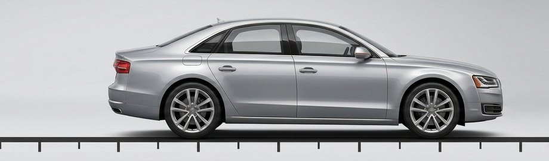

Three short conversations between a student and a generative AI, drafted for Mathematical Modeling 1.
These are drafts to try, not a finished set. Open any of them, press AI Setup, choose a provider and paste in your own key — DeepSeek, or any of the eight offered — then talk to it. The key stays in your browser: it is not stored in the page and goes nowhere but the provider you chose. Each activity takes about twenty minutes, needs nothing installed, and saves the conversation as you go.
🔑 Never set up a key before? Start here — it takes about three minutes and needs no programming.
Week 2 · approximation for large and small values
A pendulum is a weight on a string, and how long it takes to swing depends — surprisingly — hardly at all on how far you pull it aside. The exact relationship involves the sine of the release angle, and for small angles the sine of an angle is very nearly the angle itself. So how small does the angle have to be?
That question has no answer until you know what the pendulum is for. Students are given three: a metronome for someone practising, a child's swing in a playground, and a clock that must not lose a second a day. Those want accuracies three orders of magnitude apart, and each gives a different bound on the angle. Purpose fixes the tolerance; the tolerance fixes the angle.
It closes by asking whether there is always an angle small enough, however strict the requirement becomes — the idea behind a limit, reached from three concrete cases rather than from a definition.
Week 2 · dimensional analysis and proportionality
In films, giant spiders walk around like ordinary animals. Could a real one? Double every length and the weight goes up eightfold, while the cross-section of each leg goes up only fourfold — so every leg carries twice the load it did before. Keep scaling and something has to give.
Students are told neither of those numbers. They work out what happens to weight and to leg thickness themselves, put the two together, and then look for the same argument elsewhere — anywhere a surface and a volume both matter.
This one uses almost no arithmetic and no calculus at all, which makes it the most accessible of the three and a reasonable choice early in the term.

Week 3 · limits, and what a derivative is before it is computed
A speedometer reads 60 km/h at one instant. How would you check that, given only a stopwatch and distance markers? Whatever the student proposes, the next question is how long an interval they would measure over — and then what happens as that interval shrinks.
Eventually they reach an interval of exactly zero seconds and have to say what their method gives there. Then a harder question: is the speed at an instant something the car has, or something we compute?
It ends by asking whether any accuracy anyone demanded could be met by choosing a short enough interval. Students describe a limit in their own words, without having been given a definition.
All three were built with Verbatim, which records a student's conversation with a generative AI as it happens — each turn marked as the student's or the AI's, saved on the student's own device, and handed in as a single file. Nothing is posted to a website.
The three share the same rules for how the AI may reply: no more than sixty words at a time, one question per turn, and never answering its own question. Those came out of reading an earlier round of transcripts, where the AI was writing roughly eleven words for every one the student wrote. Students were holding up their half of the conversation and being buried in it.
Draft — for comment, not yet for classroom use.